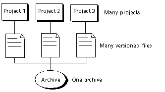

Serena ChangeMan Version Manager lets you share archives across multiple projects. In this case, you have one archive to store the file and many projects that reference the file.

For example, a company develops and sells three different software products and each one of the products uses the same license agreement. The license agreement can be shared among all three of the product's projects. In this case, the archive for the license agreement is created in one project and the other two projects reference the archive. By doing this, you can be assured that the license agreement is the same for each product. Having multiple copies of a common file each in its own archive increases the risk of the files being different--one is updated but no one remembers to update the others.
One method you can use to share files across projects is to set up a project for all shared files, and this project has the archives for the shared files. Then copy the versioned files into the other projects; the other projects will not have an archive for the copied files.
Once you have your projects defined, you can copy files anytime by using Edit | Copy Files. A copy of the versioned file is created in the destination project that references the archive.